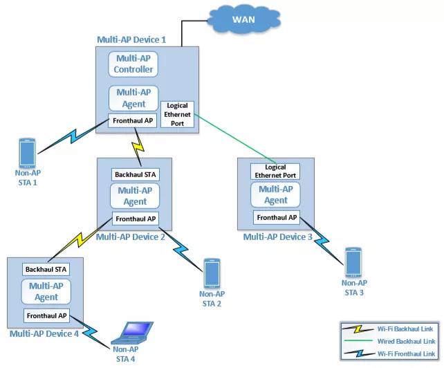
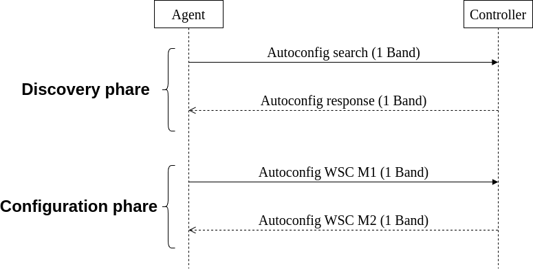
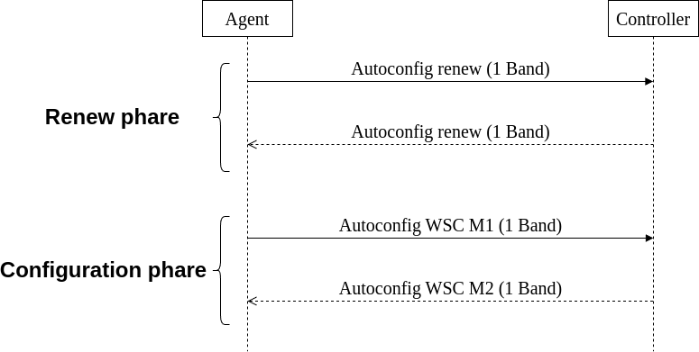
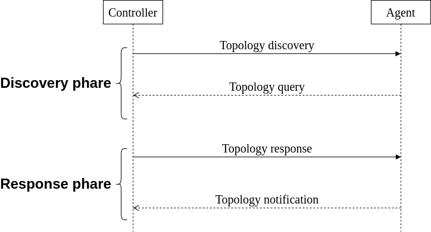
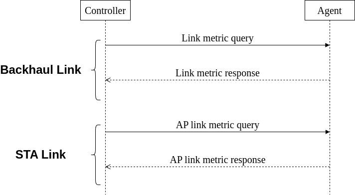

Mesh System
WiFi Mesh network (wireless mesh network), also known as “multi-hop” network, is a new wireless networking solution developed based on WiFi technology. Unlike traditional WiFi network, WiFi Mesh network is a network technology based on multi-hop routing and peer-to-peer network, which is a new network structure. In the traditional wireless network, WiFi technology constitutes the internal network. The terminal joins the network through WiFi. The connection port on the device is Ethernet or optical port. In the network deployment, once the wired distance is determined, the location of the device WiFi will also be fixed. If you want to change the location of WiFi, you need to adjust the corresponding wired network, which is more difficult to operate and consumes a lot of time and wiring costs. Therefore, the traditional WiFi construction method has the shortcomings of high cost, poor flexibility, complex operation, etc. It is not suitable for building online services in scenarios such as high wireless quality and aesthetics, less maintenance investment and weak wired network. Mesh network only needs to install corresponding subnodes, no need to change the wired network, and it is very convenient and fast to set up a network [1].

Benefits
Wi-Fi EasyMesh brings these capabilities to home and small office Wi-Fi networks [2]:
- Increased network capacity: Supports more simultaneous services and higher realized throughput when operating in Wi-Fi 6 and Wi-Fi 6E
- Flexible design: Allows for best placement of multiple APs providing extended coverage
- Easy setup: Delivers seamless, secure device onboarding and configuration using QR codes through Wi-Fi Easy Connect technology
- Network intelligence: Advanced diagnostics for Wi-Fi 6 capabilities through Wi-Fi Data Elements facilitate service provider support and responds to network conditions to maximize performance
- Effective service prioritization and Quality of Service (QoS) support: Capability to prioritize low latency applications when needed and guides devices to roam to the best connection and avoid interference
- Scalability: Enables addition of Wi-Fi EasyMesh APs from multiple vendors
Protocol
P1905.1 AL MAC Address
- A P1905.1 Abstraction Layer within a P1905.1 Device uses a MAC Address for identification.
- The P1905.1 AL MAC Address is locally administered.
- The P1905.1 AL MAC Address may be used as a source and destination address for data and P1905.1 control packets destined for the device.
- Each P1905.1 AL shall use a MAC Address that is not used by any other P1905.1 AL in the P1905.1 Network to which it connects.
Protocols for IEEE 802.11 access point autoconfiguration with IEEE Std 1905.1
AP autoconfiguration process use CMDU to send IEEE 802.11 paramaters from the registration server to the AP registration client to set initial configuration or update the existing configuration of the IEEE 802.11 interface. This operation provides an automated way to setup an extended service set for multiple APs and acts a registration client and uses an authenticated 1905.1 interface to send messages to another 1905.1 device acting as registration server. The 1905.1 network should be configured with a registration server that can be configured using buttons to facilitate the normal operation of 1905.1 devices.
After successful authentication of the 1905.1 interface, the AP-autoconfiguration process will be triggered. The AP automatic configuration process is divided into the following two stages:
1. Registrar discovery phase: to obtain information about registrars available on the 1905.1 network
2. IEEE 802.11 parameter configuration phase: Transmits configuration data between the registration server and the registration client (as specified in Wi-Fi simple configuration). The 1905.1 abstraction layer provides a transparent transmission protocol for WSC frames M1 and M2.
After receiving M1, the registration server sends M2, which contains key-encrypted configuration data. This process is defined per interface and applies to every unconfigured IEEE 802.11ap interface.
Registrar discovery phase
If the 1905.1 device contains an unconfigured IEEE 802.11 AP interface, the Registrar discovery phase SHOULD begin after successful authentication of the 1905.1 interface. The registration client sends an AP-autoconfiguration search message to discover the registration server. This multicast search message includes the UnconfiguredFreqBand TLV to discover whether the registration server can support automatic configuration of the requested frequency band. If the registration server supports the requested functionality, it shall return a unicast AP-autoconfiguration response message.

IEEE 802.11 parameter configuration phase
The IEEE 802.11 parameter configuration process should be started after receiving the AP-autoconfiguration response message. The IEEE 802.11 parameter configuration process is completed by exchanging messages: AP-autoconfiguration WSC (M1) and AP-autoconfiguration WSC (M2) (the content and format of m1 and m2 defined in wi-fi simple configuration). IEEE 802.11 configuration data is delivered to registered clients in M2. If The IEEE 802.11 parameter configuration does not complete successfully, the registered client should restart the Registrar discovery process. IEEE 802.11 settings (ConfigData) in M2 frame.
Renewing of configuration
The AP-autoconfiguration renew message should be multicast by the registration server to notify AP registration clients that have configured data using the AP-autoconfiguration process to restart the AP-autoconfiguration process to update the data. This data update process is very important for the 1905.1 network to maintain synchronization of configuration parameters during the life cycle (restart, upgrade operations, etc.). All APs previously configured by the registration server should start The IEEE 802.11 parameter configuration after receiving the AP-autoconfiguration renew message. All APs previously configured by the registration server should start The IEEE 802.11 parameter configuration after receiving the AP-autoconfiguration renew message.

Topology Managerment
- Topology discovery message (neighbor multicast): If the following event occurs, then within 1 s, a 1905.1 management entity shall transmit a topology discovery message
- Topology query message (unicast): A 1905.1 management entity may send a topology query message to another 1905.1 management entity
- Topology response message (unicast): If a 1905.1 management entity receives a topology query message, then within 1 s it shall respond. The topology response message shall contain the same MID that was received in the topology query message.
- Topology notification message (relayed multicast): If a 1905.1 management entity detects that any of the information specified to be sent in a topology response message has changed, then it shall within 1 s

Link metrics
The 1905.1 device provides link metric information for each authenticated 1905.1 interface by triggering the 1905.1 ALME primitive, thereby triggering the 1905.1 link metric information dissemination protocol information. 1905.1 Link metric information dissemination protocol includes a link metric query message process and a link metric response message process.
Link metric information dissemination protocol
The Link metric information dissemination protocol enables a 1905.1 management entity to obtain link metric information on another 1905.1 device. A 1905.1 device receiving this message provides link metric information related to all of its interfaces to the specific 1905 neighbor device or to all of its other 1905 neighbor devices. 1905.1 Link metric information dissemination protocol includes a link metric query message process and a link metric response message process.
Link metric query message (unicast)
Link metric query messages can be sent from one 1905.1 management entity to another 1905.1 management entity, and all interfaces between all 1905 devices can send this message to each other. Link metric query messages are transmitted in CMDU unicast.
Link metric response message (unicast)
If a 1905.1 managed entity receives a Link metric query message, it shall respond using the Link metric response message

Documents
You can see 1905 IEEE with P1095-Tech-Presentation or IEEE 1905
References
[1] https://www.cdatatec.com/wifi-mesh-easymesh-technology-and-products.html
[2] https://www.wi-fi.org/discover-wi-fi/wi-fi-easymesh